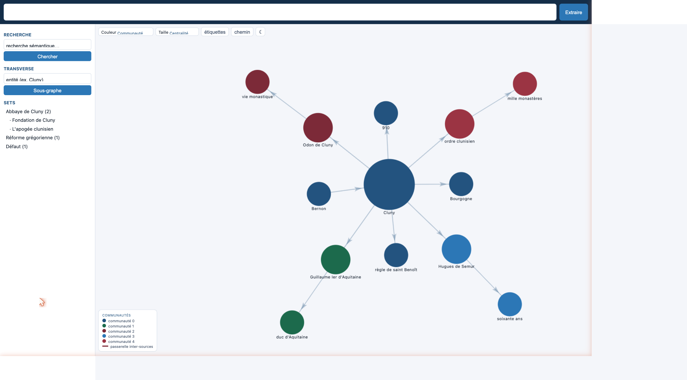
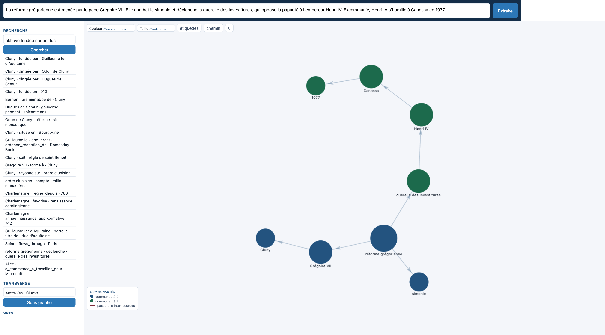
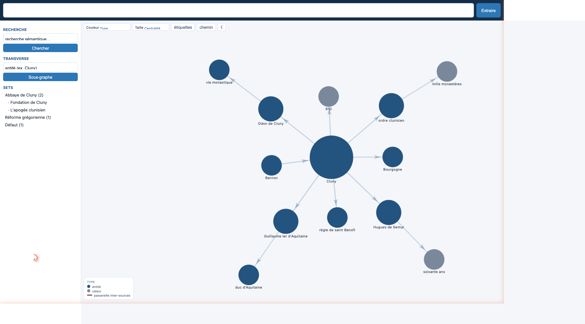
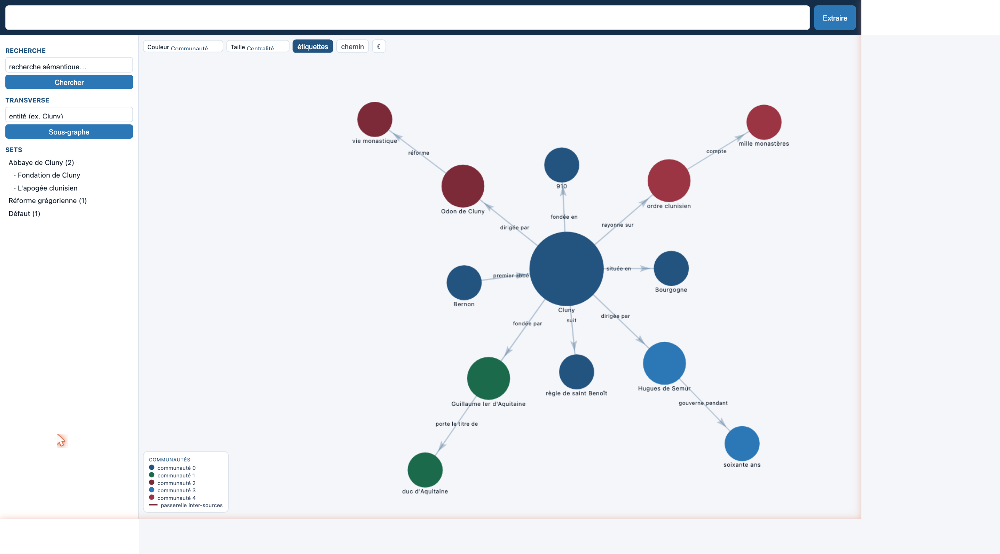
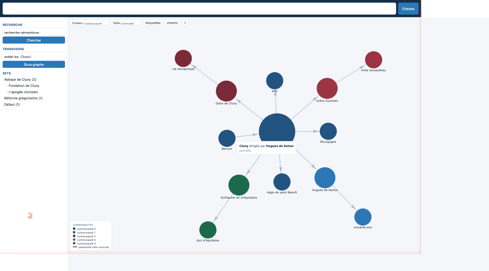
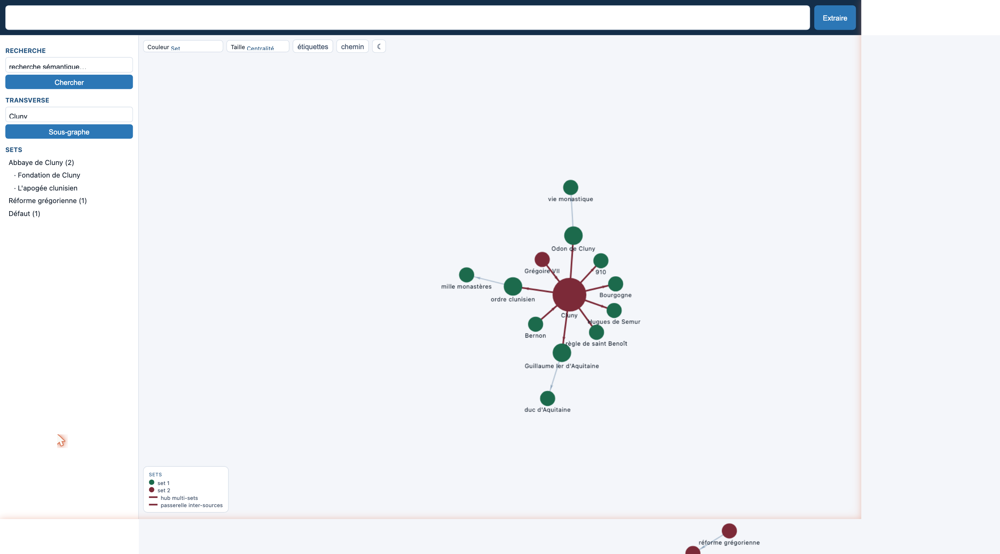
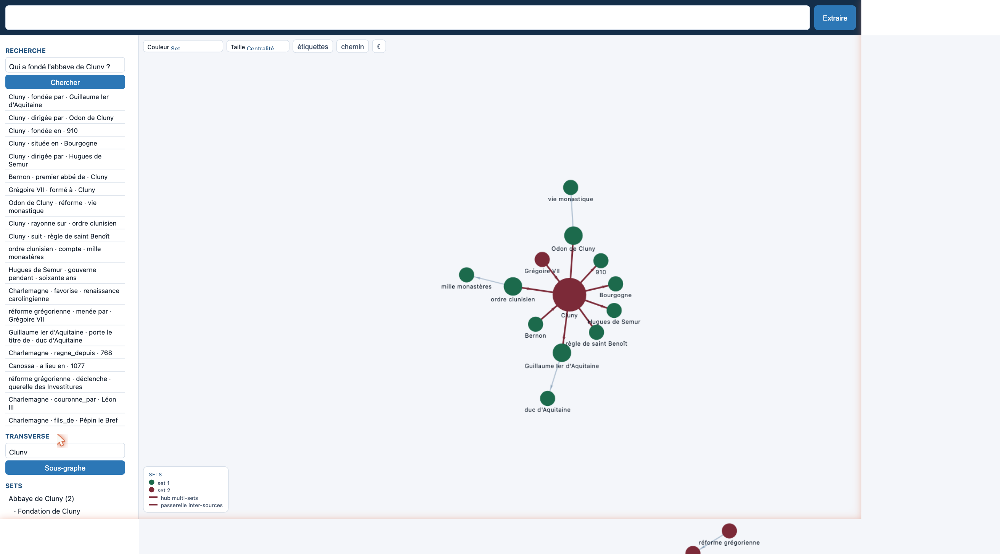
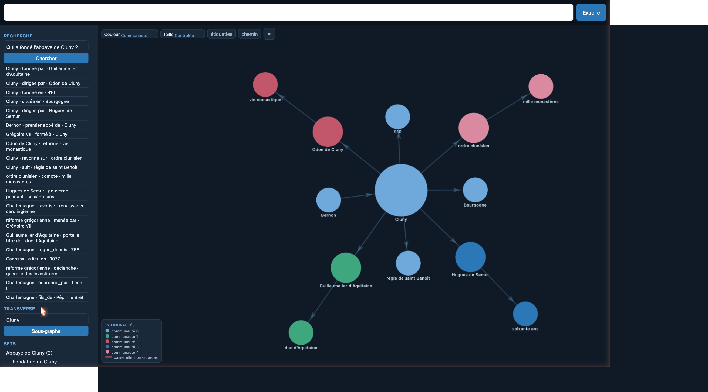

Named Entity Relation Visualizer & Extractor — manuel d'utilisation
nerve transforme un texte, des fichiers ou des pages web en un
graphe de connaissances navigable : un modèle de langage en extrait des faits
sujet — relation — objet, les entités équivalentes sont fusionnées, les faits
redondants écartés, et l'ensemble s'explore dans une page interactive. Tout fonctionne
localement sur votre machine. Ce manuel parcourt l'interface, fonctionnalité
par fonctionnalité. Les copies d'écran utilisent un petit corpus de démonstration
(l'abbaye de Cluny et la réforme grégorienne).
L'écran se découpe en trois zones : en haut, la barre d'extraction (un champ pour coller du texte et le bouton Extraire) ; à gauche, la barre latérale (recherche, vue transverse, et la liste des sets) ; au centre, le graphe surmonté de ses contrôles d'affichage (couleur, taille, étiquettes, chemin, thème) et accompagné d'une légende dynamique. Chaque nœud porte le nom de son entité (le libellé apparaît dès qu'on zoome suffisamment) ; survoler un nœud ou une arête révèle davantage de détails.

Collez un texte dans le champ du haut puis cliquez sur Extraire. nerve découpe le texte, l'envoie au modèle de langage, et affiche les faits au fur et à mesure qu'ils sont produits (flux temps réel) : le graphe se construit sous vos yeux. Chaque fait relie un sujet à un objet par un prédicat.

nerve organise la connaissance sur trois niveaux, du plus fin au plus large :
Cliquer sur un set en affiche le graphe et déroule la liste de ses documents juste en dessous.
Le menu Couleur propose quatre lectures du même graphe :
Le menu Taille fait varier le diamètre des nœuds selon leur centralité (nombre de connexions, par défaut), leur nombre de mentions, ou une taille fixe. La légende, en bas du graphe, s'adapte au mode choisi.

Le bouton étiquettes inscrit le prédicat de chaque relation
directement sur le lien correspondant. C'est la façon la plus directe de lire le graphe comme une
suite de phrases sujet — relation — objet. L'épaisseur d'un lien reflète par
ailleurs la confiance attribuée au fait.

Survolez un lien avec la souris pour afficher une carte de fait : elle rappelle le triplet complet et le degré de confiance du fait. Idéal pour inspecter une relation précise sans encombrer le graphe.

Saisissez le nom d'une entité dans le champ Transverse puis cliquez Sous-graphe. nerve rassemble cette entité et son voisinage à travers tous les sets. Lorsqu'une entité relie deux corpus distincts, elle devient un hub (en bordeaux) et les liens qui en partent sont des passerelles — les chemins par lesquels une connaissance d'un domaine en rejoint un autre.

Le champ Recherche ne cherche pas des mots-clés mais du sens : la requête est comparée aux faits par similarité vectorielle. Vous pouvez donc poser une question en langage naturel et obtenir les faits les plus proches, classés par pertinence — même si aucun mot exact ne correspond.

Le bouton ☾ / ☀ bascule entre thème clair et thème sombre. Le choix est mémorisé d'une session à l'autre.
